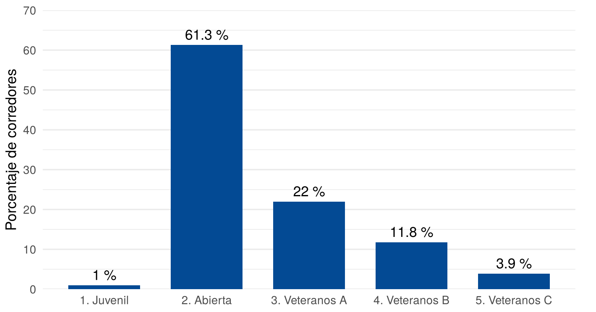
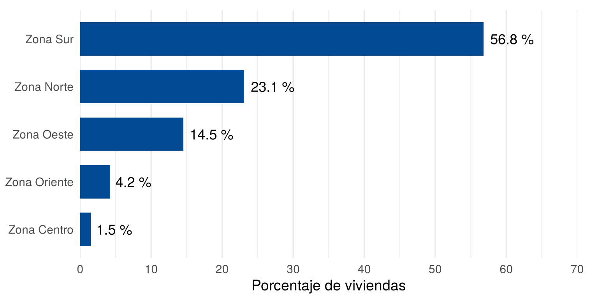
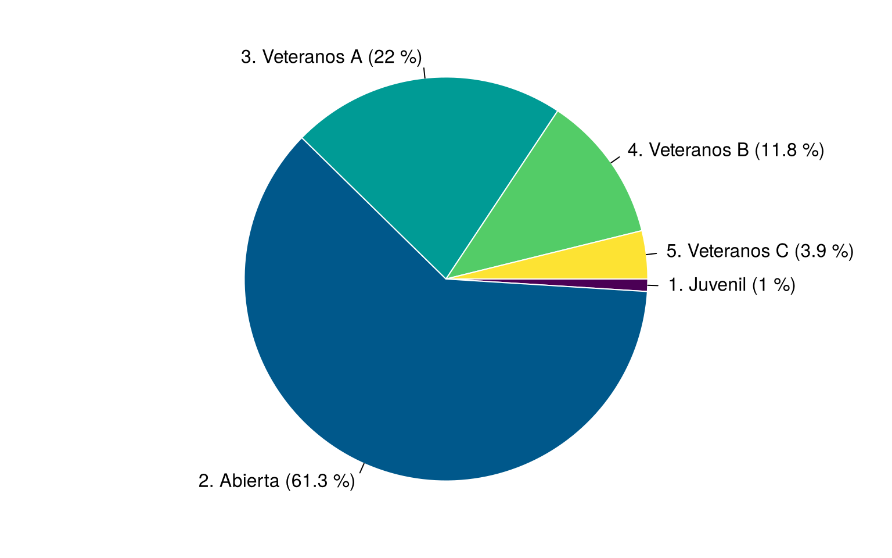
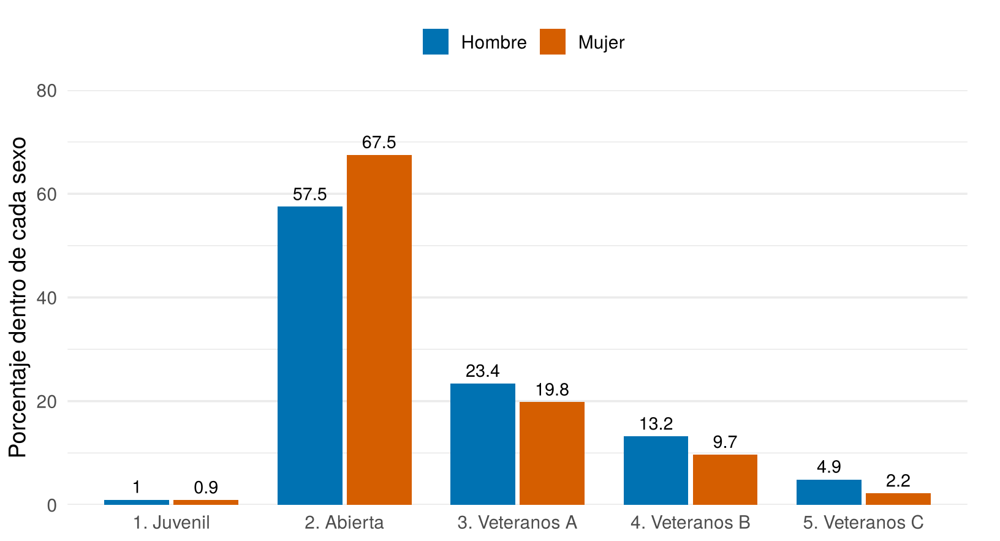
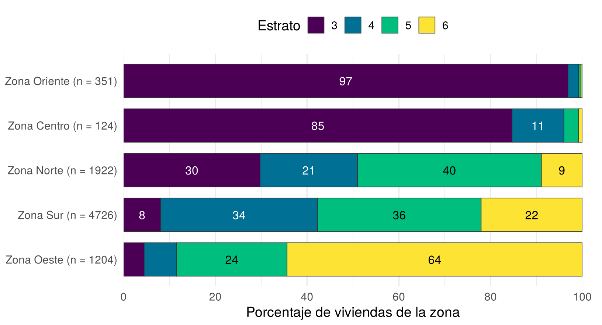
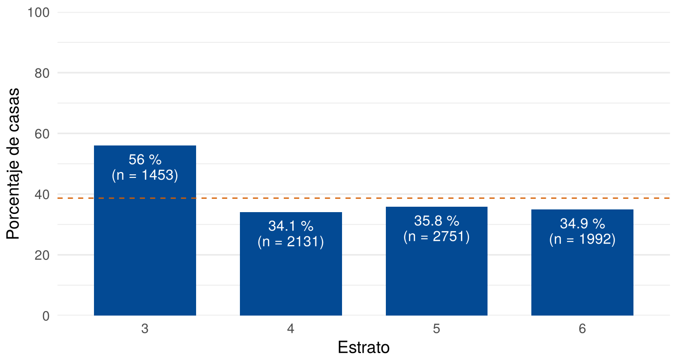
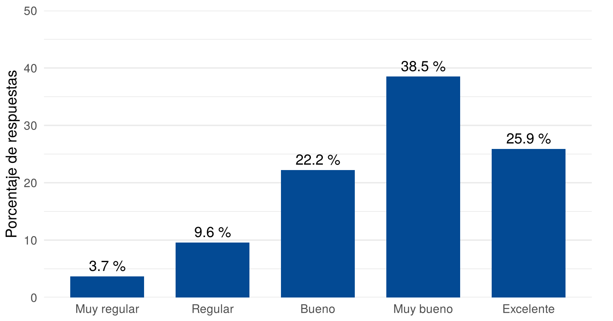
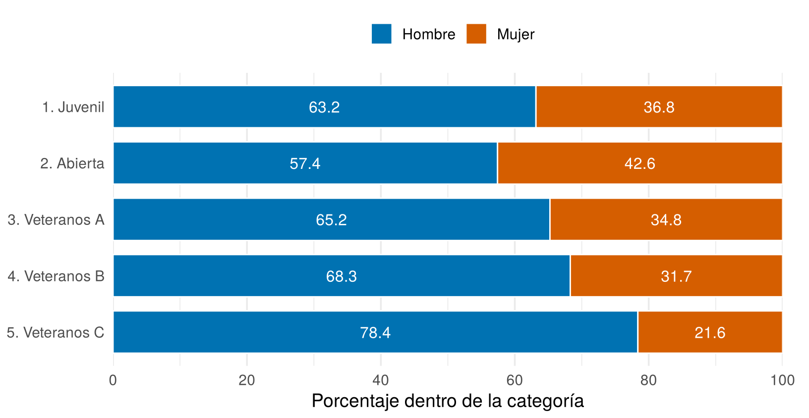

Las variables cualitativas nominales se pueden visualizar con un gráfico de barras o con un gráfico de torta. Las variables cualitativas ordinales y las cuantitativas discretas con pocos valores se suelen representar con barras, porque este formato conserva el orden de las categorías. Esta página presenta los gráficos más usados, cómo construirlos e interpretarlos. Para ver más opciones, cada sección enlaza a From Data to Viz.
Esta página usa CarreraLuz22 y
vivienda_faltantes, del paquete
paqueteMETODOS, y el paquete ggplot2,
presentado en ¿Qué es un gráfico?. Los
bloques de código se ejecutan en orden, porque algunos usan objetos
creados en bloques anteriores.
library(paqueteMETODOS)
data("CarreraLuz22")
data("vivienda_faltantes")library(ggplot2)¿Para qué sirve? Para comparar cantidades entre categorías. Cada categoría es una barra, y su longitud representa la frecuencia.
¿Cómo se hace? ggplot2 ofrece dos
funciones:
| Función | Cuándo se usa | Qué necesita en aes() |
|---|---|---|
geom_bar() |
Los datos no están contados; la función los cuenta | Solo la variable x |
geom_col() |
La tabla ya tiene las frecuencias | La variable x y la altura
y |
Para mostrar los porcentajes se prepara primero una tabla, y
geom_text() escribe las etiquetas. El eje se deja más largo
que la barra mayor para que quepan.
categorias <- as.data.frame(table(CarreraLuz22$categoria))
names(categorias) <- c("categoria", "corredores")
categorias$porcentaje <- round(100 * categorias$corredores / sum(categorias$corredores), 1)
categorias categoria corredores porcentaje
1 1. Juvenil 19 1.0
2 2. Abierta 1179 61.3
3 3. Veteranos A 423 22.0
4 4. Veteranos B 227 11.8
5 5. Veteranos C 74 3.9ggplot(categorias, aes(x = categoria, y = porcentaje)) +
geom_col(fill = "#034A94", width = 0.7) +
geom_text(aes(label = paste0(porcentaje, " %")), vjust = -0.5, size = 4.8) +
scale_y_continuous(limits = c(0, 70), breaks = seq(0, 70, 10), expand = c(0, 0)) +
labs(x = NULL, y = "Porcentaje de corredores") +
theme_minimal(base_size = 14) +
theme(panel.grid.major.x = element_blank(), plot.margin = margin(10, 20, 5, 5))
Porcentaje de corredores por categoría
¿Cómo se interpreta? Se compara la longitud de las barras, medidas desde cero. En la figura, la categoría Abierta reúne al 61.3 % de los corredores y Veteranos A al 22 %, mientras que Juvenil y Veteranos C tienen una participación pequeña, con 1 % y 3.9 %.
¿En qué orden van las barras? Depende de la escala de la variable:
| Escala | Ejemplo | Orden de las barras |
|---|---|---|
| Nominal | Zona, tipo de vivienda | De mayor a menor frecuencia |
| Ordinal | Estrato, categoría de edad | El orden propio de la variable |
| Cuantitativa discreta con pocos valores | Número de baños | De menor a mayor valor |
R ordena el texto alfabéticamente. Para una variable
nominal, reorder() ordena las categorías según otra
variable. Las barras horizontales permiten leer los nombres sin
girarlos:
zonas <- as.data.frame(table(vivienda_faltantes$zona))
names(zonas) <- c("zona", "viviendas")
zonas$porcentaje <- round(100 * zonas$viviendas / sum(zonas$viviendas), 1)
ggplot(zonas, aes(x = porcentaje, y = reorder(zona, porcentaje))) +
geom_col(fill = "#034A94", width = 0.7) +
geom_text(aes(label = paste0(porcentaje, " %")), hjust = -0.15, size = 4.8) +
scale_x_continuous(limits = c(0, 70), breaks = seq(0, 70, 10), expand = c(0, 0)) +
labs(x = "Porcentaje de viviendas", y = NULL) +
theme_minimal(base_size = 14) +
theme(panel.grid.major.y = element_blank(), plot.margin = margin(10, 20, 5, 5))
Viviendas por zona, ordenadas por frecuencia
¿Qué cuidados tener?
Ver más: gráfico de barras, líneas y puntos (lollipop) para muchas categorías, y por qué ordenar las barras.
¿Para qué sirve? Para mostrar cómo se reparte un total. El círculo completo es el 100 %, y cada sector es la participación de una categoría.
¿Cómo se hace? Se usa pie(), con
etiquetas que incluyan el porcentaje. El argumento
init.angle gira el círculo para que las etiquetas de los
sectores pequeños no se monten.
etiquetas <- paste0(categorias$categoria, " (", categorias$porcentaje, " %)")
par(mar = c(1, 1, 1, 1))
pie(categorias$corredores, labels = etiquetas, clockwise = TRUE, init.angle = 0,
col = hcl.colors(5, "viridis"), border = "white", radius = 0.85)
Distribución de los corredores por categoría
¿Cómo se interpreta? Se compara el tamaño de cada sector con el círculo, y los porcentajes deben sumar 100 %. En la figura, la categoría Abierta ocupa más de la mitad del círculo.
¿Cuándo conviene? Las fuentes no coinciden del todo:
| Fuente | Posición |
|---|---|
| Holtz y Healy | Lo desaconsejan, porque los ángulos se leen mal. Proponen barras |
| Government Analysis Function (2022) | Lo aceptan con cinco categorías o menos, un total con sentido y una categoría dominante. Si son similares, proponen barras |
¿Qué cuidados tener?
Ver más: por qué se critica la torta, dona y mapa de árbol.
¿Para qué sirve? Para comparar dos variables categóricas, con las barras de cada grupo una al lado de la otra. Antes de graficar hay que decidir qué representa el 100 %:
sexo_categoria <- table(CarreraLuz22$sex, CarreraLuz22$categoria)
# El 100 % es cada sexo (filas)
round(100 * prop.table(sexo_categoria, margin = 1), 1)
1. Juvenil 2. Abierta 3. Veteranos A 4. Veteranos B 5. Veteranos C
Hombre 1.0 57.5 23.4 13.2 4.9
Mujer 0.9 67.5 19.8 9.7 2.2# El 100 % es cada categoría (columnas)
round(100 * prop.table(sexo_categoria, margin = 2), 1)
1. Juvenil 2. Abierta 3. Veteranos A 4. Veteranos B 5. Veteranos C
Hombre 63.2 57.4 65.2 68.3 78.4
Mujer 36.8 42.6 34.8 31.7 21.6La primera tabla dice que el 67.5 % de las mujeres está en la categoría Abierta. La segunda dice que el 42.6 % de quienes están en la categoría Abierta son mujeres. Son dos afirmaciones diferentes.
¿Cómo se hace? Se usa position_dodge().
Los colores vienen de la paleta Okabe-Ito, incluida en
R, que se consulta con
palette.colors().
por_sexo <- as.data.frame(round(100 * prop.table(sexo_categoria, margin = 1), 1))
names(por_sexo) <- c("sexo", "categoria", "porcentaje")
ggplot(por_sexo, aes(x = categoria, y = porcentaje, fill = sexo)) +
geom_col(position = position_dodge(0.8), width = 0.75) +
geom_text(aes(label = porcentaje), position = position_dodge(0.8),
vjust = -0.5, size = 3.8) +
scale_fill_manual(values = c("Hombre" = "#0072B2", "Mujer" = "#D55E00")) +
scale_y_continuous(limits = c(0, 80), breaks = seq(0, 80, 20), expand = c(0, 0)) +
labs(x = NULL, y = "Porcentaje dentro de cada sexo", fill = NULL) +
theme_minimal(base_size = 14) +
theme(panel.grid.major.x = element_blank(), legend.position = "top",
plot.margin = margin(10, 20, 5, 5))
Distribución de cada sexo por categoría
¿Cómo se interpreta? Primero se identifica qué representa el 100 %, y después se comparan las barras dentro de cada categoría. En la figura, las mujeres se concentran más en la categoría Abierta (67.5 %) que los hombres (57.5 %), y los hombres tienen mayor participación en las tres categorías de veteranos.
¿Qué cuidados tener? Se recomienda un máximo de cuatro barras por grupo (Government Analysis Function, 2022), y las barras de un mismo grupo deben quedar más cerca entre sí que de las otras.
Ver más: barras agrupadas.
¿Para qué sirve? Para mostrar cómo se reparte el total en cada grupo. Por ejemplo, la composición por estrato de cada zona.
¿Cómo se hace? Se usa position_stack().
Como las zonas tienen tamaños muy distintos, conviene escribir el número
de viviendas en la etiqueta. Los colores de
hcl.colors(4, "viridis") van de oscuro a claro y conservan
el orden del estrato.
zona_estrato <- table(vivienda_faltantes$zona, vivienda_faltantes$estrato)
por_zona <- as.data.frame(100 * prop.table(zona_estrato, margin = 1))
names(por_zona) <- c("zona", "estrato", "porcentaje")
total <- rowSums(zona_estrato)
por_zona$etiqueta <- paste0(por_zona$zona, " (n = ", total[as.character(por_zona$zona)], ")")
# Las zonas se ordenan según su porcentaje de estrato 3
estrato3 <- por_zona$porcentaje * (por_zona$estrato == 3)
ggplot(por_zona, aes(x = porcentaje, y = reorder(etiqueta, estrato3, max), fill = estrato)) +
geom_col(position = position_stack(reverse = TRUE), color = "#333333",
linewidth = 0.3, width = 0.75) +
geom_text(aes(label = ifelse(porcentaje >= 8, round(porcentaje), ""), color = estrato),
position = position_stack(vjust = 0.5, reverse = TRUE), size = 4.2) +
scale_fill_manual(values = hcl.colors(4, "viridis")) +
scale_color_manual(values = c("white", "white", "black", "black"), guide = "none") +
scale_x_continuous(breaks = seq(0, 100, 20), expand = c(0, 0)) +
labs(x = "Porcentaje de viviendas de la zona", y = NULL, fill = "Estrato") +
theme_minimal(base_size = 14) +
theme(panel.grid.major.y = element_blank(), legend.position = "top",
plot.margin = margin(10, 20, 5, 5))
Composición por estrato de las viviendas de cada zona
¿Cómo se interpreta? Cada barra suma 100 %, y se compara el tamaño de los segmentos. Las zonas Oriente y Centro están formadas casi por completo por viviendas de estrato 3 (96.9 % y 84.7 %), mientras que en la Zona Oeste predomina el estrato 6 (64.4 %).
¿Qué cuidados tener?
Ver más: por qué cuesta leer los gráficos apilados.
¿Para qué sirve? Para responder preguntas como ¿qué porcentaje de los clientes aceptó una oferta en cada nivel educativo? o ¿qué porcentaje de las viviendas es casa en cada estrato? La variable de interés tiene dos categorías, sí o no, y se compara el porcentaje de “sí” entre los grupos.
¿Cómo se hace? Se convierte la variable en una variable
indicadora, con 1 para “sí” y 0 para “no”. Su media en cada grupo es
la proporción de “sí”, y tapply() la calcula por grupo.
Primero se unifica la escritura del tipo de vivienda, como en ¿Cómo organizar los datos?:
viviendas <- vivienda_faltantes[!is.na(vivienda_faltantes$id), ]
tipo <- tolower(viviendas$tipo)
tipo[tipo == "apto"] <- "apartamento"
es_casa <- as.integer(tipo == "casa")
round(100 * mean(es_casa), 1) # en toda la base[1] 38.7round(100 * tapply(es_casa, viviendas$estrato, mean), 1) # en cada estrato 3 4 5 6
56.0 34.1 35.8 34.9 table(viviendas$estrato) # viviendas por estrato
3 4 5 6
1453 2131 2751 1992 El número de unidades de cada grupo se reporta junto con el porcentaje, porque un porcentaje calculado con pocos datos cambia mucho de una muestra a otra.
Para el gráfico se arma una tabla con el porcentaje y el número de viviendas de cada estrato. La línea punteada marca el porcentaje de toda la base, como referencia:
por_estrato <- data.frame(
estrato = names(table(viviendas$estrato)),
viviendas = as.vector(table(viviendas$estrato)),
porcentaje = as.vector(round(100 * tapply(es_casa, viviendas$estrato, mean), 1))
)
por_estrato$etiqueta <- paste0(por_estrato$porcentaje, " %\n(n = ", por_estrato$viviendas, ")")
ggplot(por_estrato, aes(x = estrato, y = porcentaje)) +
geom_col(fill = "#034A94", width = 0.7) +
geom_hline(yintercept = 100 * mean(es_casa), linetype = "dashed", color = "#D55E00") +
geom_text(aes(label = etiqueta), vjust = 1.3, size = 4.2, lineheight = 0.9, color = "white") +
scale_y_continuous(limits = c(0, 100), breaks = seq(0, 100, 20), expand = c(0, 0)) +
labs(x = "Estrato", y = "Porcentaje de casas") +
theme_minimal(base_size = 14) +
theme(panel.grid.major.x = element_blank(), plot.margin = margin(10, 20, 5, 5))
Porcentaje de casas en cada estrato
¿Cómo se interpreta? Se compara cada barra con las demás y con la línea de referencia. En el estrato 3, el 56 % de las viviendas son casas, frente a cerca del 35 % en los estratos 4, 5 y 6. El porcentaje de toda la base es 38.7 %. El estrato 3 se aparta del resto, y los otros tres son muy parecidos entre sí.
¿Qué cuidados tener?
Ver más: gráfico de barras y líneas y puntos (lollipop), útil cuando hay muchos grupos.
| Problema | Causa | Solución |
|---|---|---|
| Todas las barras miden 1 | Se usó geom_bar() con una tabla ya
contada |
Usar geom_col() con
aes(y = frecuencia) |
| Las barras nominales salen en orden alfabético | R ordena el texto alfabéticamente | Ordenar con reorder() |
| El estrato sale desordenado | Se aplicó reorder() a una variable
ordinal |
Conservar el orden propio de la variable |
| Una etiqueta se corta arriba de la barra | El eje termina justo en la barra mayor | Ampliar limits |
| El porcentaje se interpreta mal | No se definió qué representa el 100 % | Revisar margin en
prop.table() |
| Una torta con muchos sectores no se entiende | Hay demasiadas categorías, o son parecidas | Agrupar en Otras, o usar barras |
tapply() da NA al calcular
una proporción |
La variable tiene datos faltantes | Usar tapply(x, g, mean, na.rm = TRUE) y
reportar los faltantes |
| Un grupo con pocos datos tiene un porcentaje extremo | El porcentaje se calculó con pocas unidades | Reportar el número de unidades de cada grupo |
Indique en qué orden pondría las barras de estas variables: nacionalidad, estrato, número de habitaciones y tipo de vivienda.
La nacionalidad y el tipo de vivienda son nominales, así que van de mayor a menor frecuencia. El estrato es ordinal y el número de habitaciones es cuantitativo discreto, así que conservan su orden de menor a mayor.
En la evaluación de un proceso de inducción, las respuestas fueron: Muy regular 5, Regular 13, Bueno 30, Muy bueno 52 y Excelente 35. Haga un gráfico de barras en porcentaje, con las categorías en el orden de la escala, e interprételo.
La función factor() con levels fija el
orden de las categorías.
escala <- c("Muy regular", "Regular", "Bueno", "Muy bueno", "Excelente")
evaluacion <- data.frame(
respuesta = factor(escala, levels = escala),
frecuencia = c(5, 13, 30, 52, 35)
)
evaluacion$porcentaje <- round(100 * evaluacion$frecuencia / sum(evaluacion$frecuencia), 1)
ggplot(evaluacion, aes(x = respuesta, y = porcentaje)) +
geom_col(fill = "#034A94", width = 0.7) +
geom_text(aes(label = paste0(porcentaje, " %")), vjust = -0.5, size = 4.8) +
scale_y_continuous(limits = c(0, 50), breaks = seq(0, 50, 10), expand = c(0, 0)) +
labs(x = NULL, y = "Porcentaje de respuestas") +
theme_minimal(base_size = 14) +
theme(panel.grid.major.x = element_blank(), plot.margin = margin(10, 20, 5, 5))
Resultados de la evaluación
La respuesta más frecuente fue Muy bueno, con 38.5 %. Sumadas, Muy bueno y Excelente llegan a 64.4 %.
Con la variable origen de CarreraLuz22,
deje Cali, Jamundi y Palmira, y agrupe los demás lugares en Otras. Antes
quite las tildes. Calcule los porcentajes y diga si se cumplen las
condiciones para usar una torta.
origen <- chartr("áéíóú", "aeiou", CarreraLuz22$origen)
grupo <- ifelse(origen %in% c("Cali", "Jamundi", "Palmira"), origen, "Otras")
round(100 * prop.table(table(grupo)), 1)grupo
Cali Jamundi Otras Palmira
86.9 3.0 8.3 1.9 Se cumplen: son cuatro categorías, el total es el número de corredores y Cali domina con claridad.
Haga un gráfico de barras apiladas del porcentaje de hombres y mujeres dentro de cada categoría de corredor. ¿En qué categoría es menor la participación de las mujeres?
Aquí el 100 % es cada categoría, por lo que se usa
margin = 2.
por_categoria <- as.data.frame(100 * prop.table(sexo_categoria, margin = 2))
names(por_categoria) <- c("sexo", "categoria", "porcentaje")
ggplot(por_categoria, aes(x = porcentaje, y = categoria, fill = sexo)) +
geom_col(position = position_stack(reverse = TRUE), color = "white", width = 0.75) +
geom_text(aes(label = round(porcentaje, 1)),
position = position_stack(vjust = 0.5, reverse = TRUE),
color = "white", size = 4.2) +
scale_fill_manual(values = c("Hombre" = "#0072B2", "Mujer" = "#D55E00")) +
scale_x_continuous(breaks = seq(0, 100, 20), expand = c(0, 0)) +
scale_y_discrete(limits = rev) +
labs(x = "Porcentaje dentro de la categoría", y = NULL, fill = NULL) +
theme_minimal(base_size = 14) +
theme(panel.grid.major.y = element_blank(), legend.position = "top",
plot.margin = margin(10, 20, 5, 5))
Composición por sexo de cada categoría
La participación de las mujeres es menor en Veteranos C, con 21.6 %.
geom_bar() y preguntas
frecuentes sobre barras.palette.colors(). Incluye la paleta Okabe-Ito.Última revisión: 6 de noviembre de 2026.